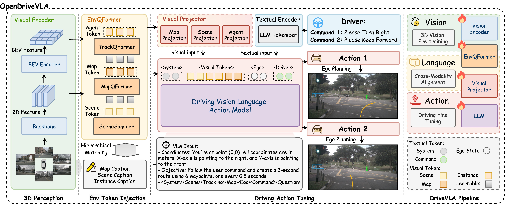
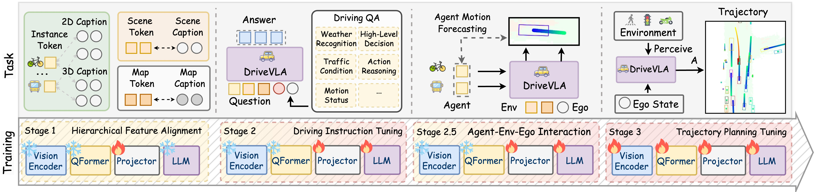
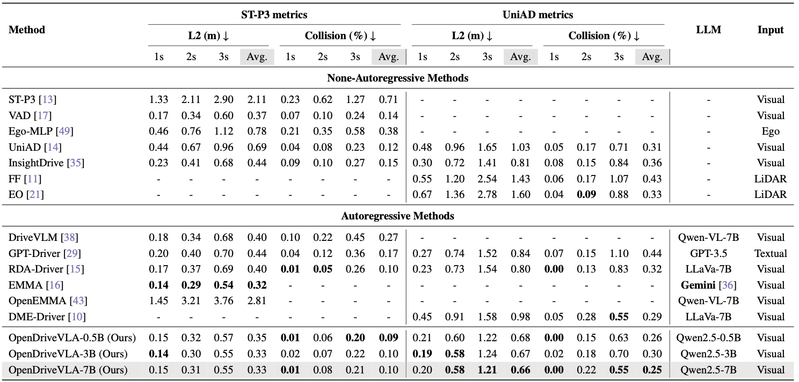

OpenDriveVLA: Towards End-to-End Autonomous Driving with Large Vision-Language Action Model
OpenDriveVLA 基于开源 VLM/LLM，把 2D/3D instance-aware scene、agent、map tokens 层级对齐到语言空间，并通过 agent-env-ego 交互任务和轨迹规划微调自回归生成驾驶轨迹。
Vision-Language-Action、3D spatial grounding、hierarchical alignment、agent-env-ego interaction、Qwen2.5、nuScenes-QA、open-loop planning、autoregressive waypoints
Open-source 3D VLA / autoregressive trajectory planning
是，仓库公开；项目页显示模型/推理/环境逐步发布
很高：最贴近“自动驾驶 VLA”定义的开源工作之一
计划公网链接：https://ixgnozeix.github.io/paper-reports/report/opendrivevla/
1. 论文速览
OpenDriveVLA 把 VLA 从机器人操作迁移到自动驾驶：输入包括多视角视觉、3D 环境表征、ego state 和高层 command；输出是可解析的未来 waypoints。与只给 VLM 加 QA/caption head 的方法不同，它显式构造 scene token、agent token 和 map token，并通过层级视觉-语言对齐、驾驶 instruction tuning、agent-env-ego interaction、trajectory planning tuning 四阶段训练，让 LLM 内部学到空间和交互先验。项目页结果表显示 OpenDriveVLA-0.5B/3B/7B 在 ST-P3 和 UniAD 指标下与 GPT-Driver、DriveVLM、EMMA 等 autoregressive 方法比较，OpenDriveVLA-7B 在 UniAD metrics Avg. L2/Collision 上达到 0.66/0.25。
2. 研究问题与动机
原生 VLM 多用于 2D 图像问答，缺少 3D 空间、实例身份和多智能体互动的 inductive bias，直接输出驾驶动作会出现 hallucination 和物理不可行轨迹。OpenDriveVLA 的关键问题是：如何让开源 VLM 既保留语言推理能力，又能生成空间可靠的驾驶动作？显而易见的替代方案是把 VLM 作为 slow planner 或解释头，但这会保留模块间断裂；作者选择让 3D structured tokens 进入 LLM，并把 agent motion forecasting 作为辅助任务嵌入自回归训练。
4. 方法详解
视觉端先从多视角图像抽取 multi-scale 2D features，并 lift/aggregate 成 BEV features。随后三个 query 模块产生 scene token、agent tokens 和 map tokens：scene 负责全局语义，agent 负责动态目标，map 负责车道/可行驶区域等静态结构。层级对齐阶段冻结视觉编码器和 LLM，只训练投影器，将不同 token 对齐到 caption/QA 文本空间；instruction tuning 注入驾驶问答知识；agent-env-ego interaction 阶段让 LLM 基于 scene/map/ego 预测各 agent future motion；最后 trajectory planning tuning 将 ego waypoints 离散为 token，进行自回归生成。推理时生成 tokenized trajectory，再解码成数值 waypoints。
5. 实验与结果
实验主要在 nuScenes open-loop planning 和 driving-related QA 上。项目页主表把非自回归方法、GPT-Driver/DriveVLM/EMMA/RDA-Driver 等自回归方法和 OpenDriveVLA-0.5B/3B/7B 放在同一表中，指标包括 ST-P3 L2/Collision 和 UniAD L2/Collision。OpenDriveVLA-7B 在 UniAD metrics Avg. L2=0.66、Avg. Collision=0.25；OpenDriveVLA-3B 在 ST-P3 metrics Avg. L2=0.33、Avg. Collision=0.10。消融重点应读四阶段训练、3D tokens 和 agent-env-ego interaction 的贡献。证据缺口是 open-loop 不能替代闭环安全，且数据集中的 GT/感知输入依赖需要仔细确认。
6. 复现要点
复现优先按官方仓库：环境安装、nuScenes 数据准备、checkpoint 下载、inference/evaluation。硬件取决于 0.5B/3B/7B 模型尺寸，先跑 0.5B 验证数据链路，再跑 3B/7B 对齐论文指标。阻塞点包括 mmdet3d/mmcv 与 PyTorch 版本、nuScenes caption/QA 数据、UniAD/ST-P3 metrics 的实现差异。验收标准是主表中的 Avg. L2/Collision 和 QA 指标趋势，而不是单个场景可视化。
7. 分析、局限与边界
OpenDriveVLA 的价值在于把“3D driving inductive bias”放进 VLA，而不是天真用 2D VLM 输出动作。证据支持结构化 token 与 interaction auxiliary task 能改善开环规划，但仍不能证明闭环稳定和安全。后续可以把 OpenDriveVLA 接到 LMDrive/CARLA 或 nuPlan closed-loop，或者用 Drive-WM/OccWorld 做 rollout verifier。
8. 组会问答准备
A：因为原生 2D VLM 容易混淆实例、缺少深度和交互结构，3D agent/map tokens 能降低幻觉并提供规划所需空间先验。
A：对齐解决模态差异，instruction tuning 注入驾驶知识，agent-env-ego interaction 学动态关系，planning tuning 学 ego 轨迹生成。
A：EMMA 更偏 Gemini generalist，多任务文本输出；OpenDriveVLA 更偏开源 3D VLA 和 nuScenes open-loop 轨迹规划。
A：open-loop 只比较预测轨迹与专家轨迹，不能覆盖闭环偏离、传感器延迟和长期安全反馈。
A：先复现主表中的 ST-P3/UniAD Avg. L2 和 Collision，再做训练阶段消融。
9. 补充图解与附录证据



我的阅读笔记
这是十篇里最适合放在 VLA 主线的开源工作。下一步可以和 LMDrive 组合：OpenDriveVLA 做 3D VLA planner，LMDrive/LangAuto 做闭环语言指令评测。